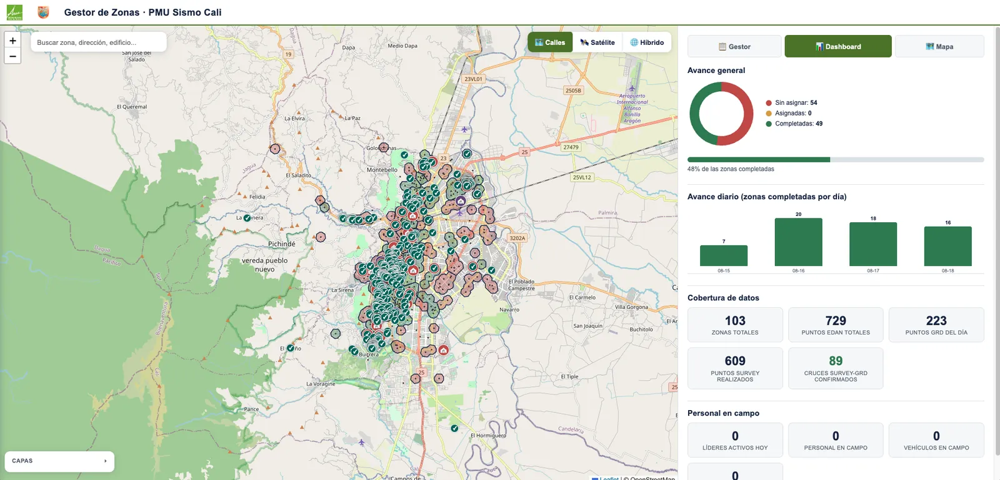
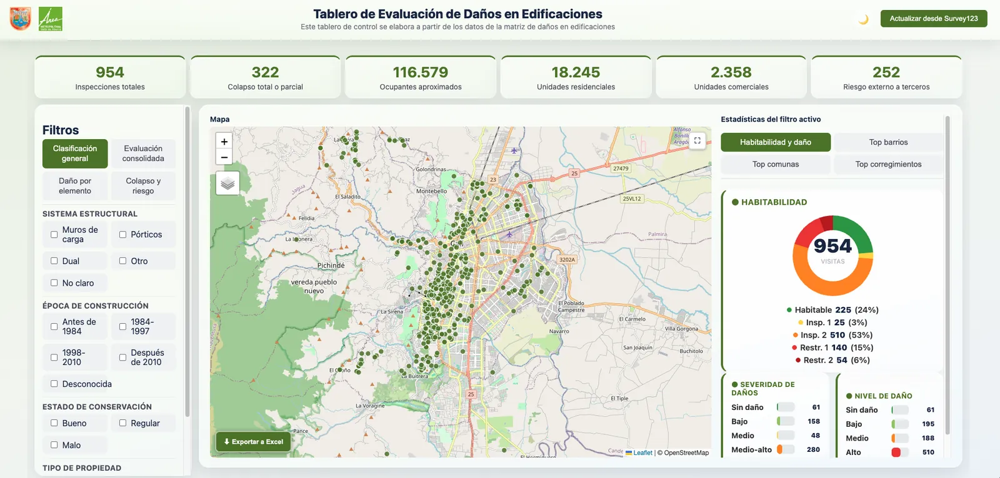

- Usado en emergencia
PMU sismo de Cali: dos herramientas en plena emergencia
Un gestor para asignar zonas a las cuadrillas y seguir su avance día a día, y un tablero para filtrar las evaluaciones de daños en edificaciones por sistema estructural, época de construcción, estado y tipo de propiedad.
- días para construir el gestor de zonas
- 2
- zonas gestionadas
- 103
- inspecciones de edificaciones
- 954
- ocupantes aproximados
- 116.579
Google Apps Script, Sheets, Survey123, Leaflet

